수정 → 비교 → 수정 → 비교 → 수정
0.107.11+222 · Figma 원본 axfr9s1n · 2026-09-15
전체 회귀 864 통과, 마지막 버튼 보완 후 관련 290 통과. 오류 0·경고 0.
변경 기록·검수 범위·유지한 기능상 차이
1. 기기 검색
원본 SVG·배경·구분선·안내 문구. 검수 기기명과 신호값은 원본 예시와 다릅니다.
Figma 원본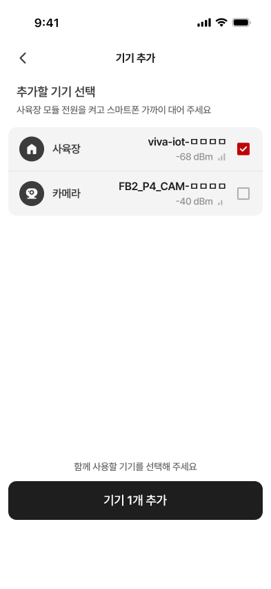
최종 Flutter 위젯 캡처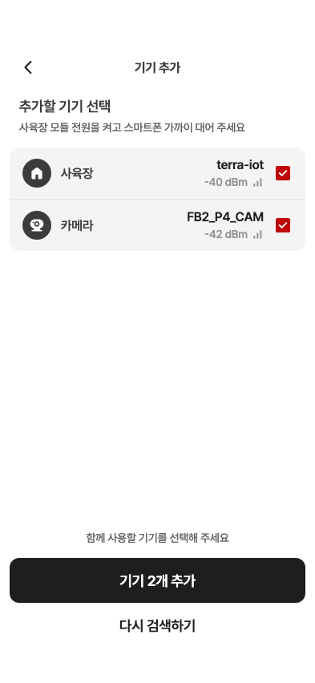
2. Wi-Fi 입력
테두리·눈 아이콘·기억하기 간격·우측 닫기. 원본은 키보드가 열린 상태입니다. 빈 비밀번호 동작과 복구 버튼은 유지했습니다.
Figma 원본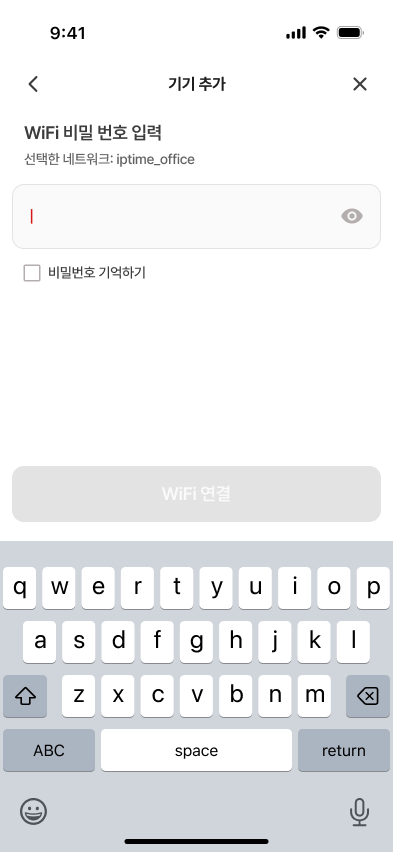
최종 Flutter 위젯 캡처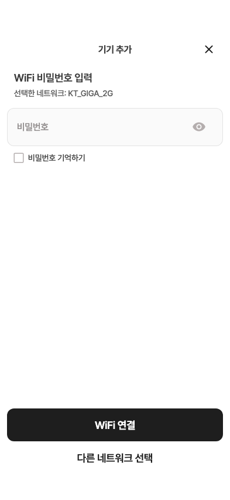
3. 개체 선택
선택300 / 미선택400. 개체 내용은 로컬 검수 데이터입니다.
Figma 원본 최종 Flutter 위젯 캡처
최종 Flutter 위젯 캡처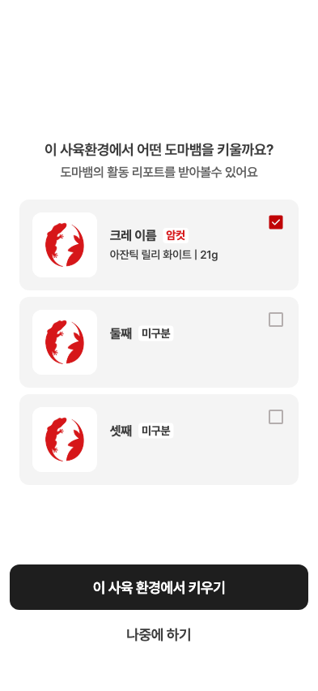
4. 종 선택 팝업
입력칸 아래 흰색·12px 팝업. 승인대로 신규 종은 크레스티드 게코만 선택합니다. 스크롤 위치가 다릅니다.
Figma 원본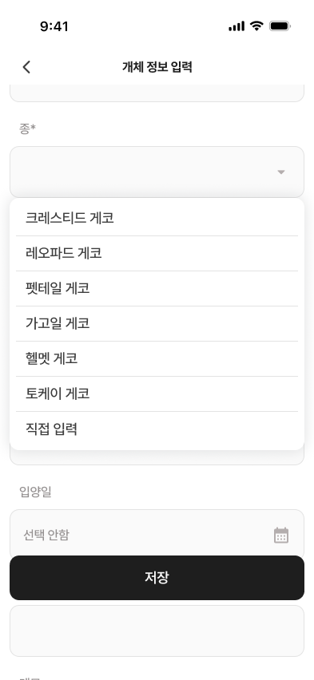
최종 Flutter 위젯 캡처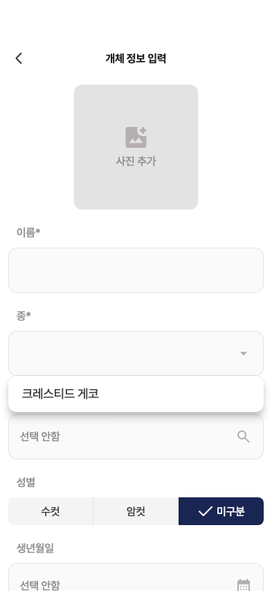
실제 시뮬레이터
로컬 검수 데이터. 네이티브 글꼴과 그림자를 확인했습니다.
개체 연결 · 1마리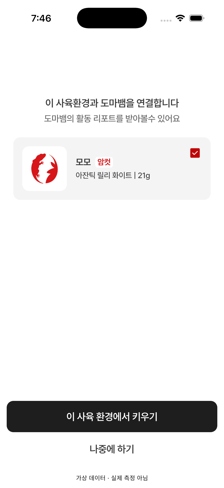
종 선택 팝업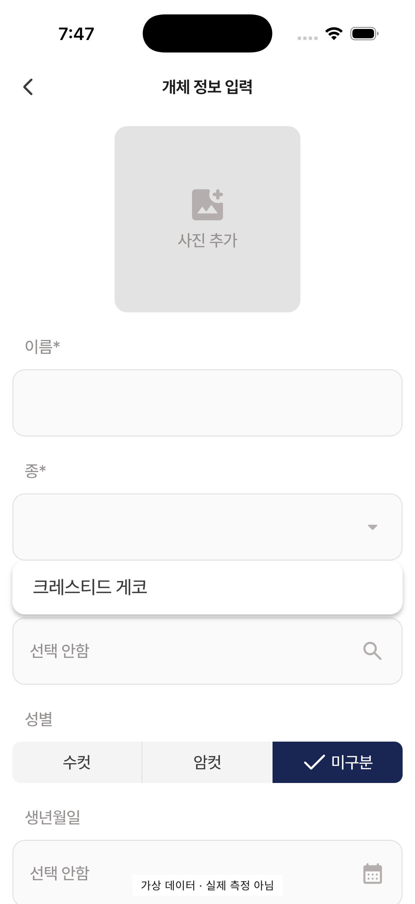
홈 복귀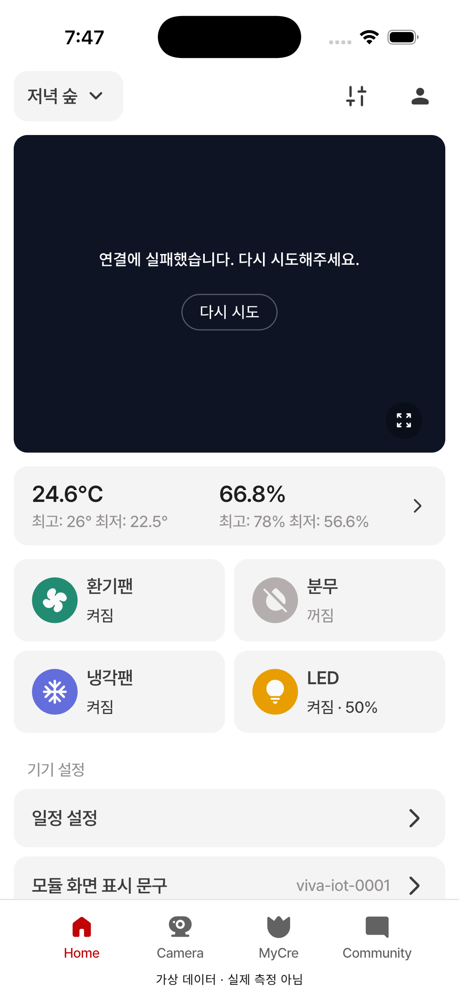
중간 비교 기록
수정 1 · 기기 목록비교 2 · 수정 전 종 팝업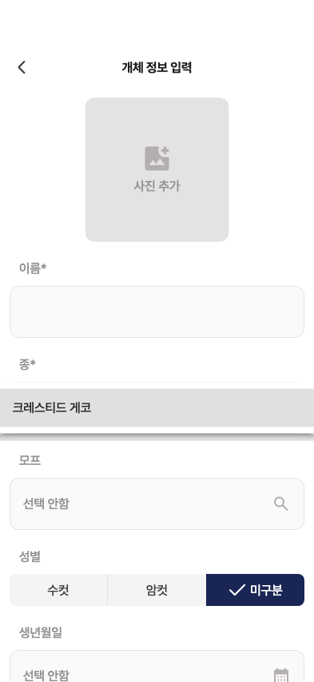